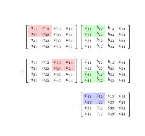

How to optimize matrix multiplication on CPU
Importance of matrix multiplication
Matrix multiplication is a fundamental operation in scientific computing. Here are just a few of countless uses of this fundamental linear algebra operation:
- compactly notating systems of linear equations
- solving least squares problems, e.g. linear regression (both the analytical and the iterative solution)
- characteristic equations in differential equations are based on eigenvalue decomposition
- dimensionality reduction (PCA)
- decompositions such as SVD (since \(M=U \Sigma V^*\)), which can be used e.g. in topic modeling (LSA)
- developing search result ranking algorithms (e.g. PageRank)
- finding the transitive closure in graphs
- solving the all-pairs shortest path (APSP) problem
Since this blog is about machine learning and mostly deep learning, the primary application of interest to the reader will most likely be the implementation of fully-connected layers in neural networks. At its core, the fully-connected layer is based on a generalized matrix multiplication (GEMM).
Convolutions can also be cast as matrix multiplications. For example, a classic approach for this is to preprocess the input using im2col, do a matrix multiplication, and then apply col2im. This is very inefficient, because the im2col matrix needs to be generated, and takes up a lot of extra memory and time. However, this approach can be made efficient using implicit im2col, resulting in an implicit GEMM convolution, which is implemented via some of the cuDNN algorithms. Also, a \(1x1\) convolution can be cast as a matrix multiplication even without im2col.
Review of the mathematical operation
Before we focus on the code, let's review the basics. If we take a matrix \(A_{MxK}\) with \(M\) rows and \(K\) columns, we can multiply it by matrix \(B_{KxN}\) with \(K\) rows and \(N\) columns, obtaining matrix \(C_{MxN}\) with \(M\) rows and \(N\) columns. To obtain each value \(C_{ij}\), we calculate a dot product between the \(i\)th row of \(A\) and the \(j\)th column of \(B\).
Machine Config
For any benchmark, we need to know what hardware and software configuration we're dealing with. The performance reported below was based on the following hardware and software:
- CPU: Intel® Core™ i7-7800X @ 3.50 GHz
- RAM: 32 GB DDR4 @ 2.4 GHz (G-Skill Ripjaws F4-2400C15-16GVR)
- Motherboard: ASUS PRIME X299-A motherboard
- OS: Ubuntu 16.04.6 LTS (Xenial Xerus)
- C++ Compiler: GCC 5.4.0 (also others for comparison, if explicitly stated)
- Compiler flags:
-O3 -march=native -funroll-loops(unless specified otherwise)
Matrix dimensions for our experiments
Let's assume that M = N = K = 1024 for simplicity. This will let us easily reason about Big O, or rather, in this case, Big \(\Theta\) (tight bound, rather than the upper bound). For example, we know that the default multiplication algorithm takes \(\Theta\)(\(MNK\)) time, which we can just write as \(\Theta\)(\(N^3\))
Naive Iterative Algorithm
Let's try a simple 3-loop iterative algorithm in C++:
void naiveIterativeMatmul(
float* const A,
float* const B,
float* const C,
const int M,
const int N,
const int K) {
for (int m = 0; m < M; m++) {
for (int n = 0; n < N; n++) {
for (int k = 0; k < K; k++) {
C[m * M + n] += A[m * M + k] * B[k * K + n];
}
}
}
}
Note that since there's a += operator, the \(C\) matrix needs to be first memset to zero. Note that I assume the memset is done in all reported performance results. It also turns out that the memset doesn't really matter for performance, since it's \(\Theta\)(\(N^2\)) time (the size of the \(C\) matrix), compared to \(\Theta\)(\(N^3\)) time (compute time for the matrix multiplication). Empirical measurements match the complexity intuition, plus the memset component applies to all the algorithms except one, so it won't affect our comparisons.
Can we see any problems with the code above? The code runs extremely slowly. With the good compiler flags mentioned above, this implementation took 1,600 ms. With lower optimization levels, performance was even worse. For example, just using -O2 without -march=native, I got 1,750 ms; -O1 was 2,438 ms; and no flags took 4,501 ms. By comparison, a good implementation should take less than 40 ms.
The importance of good compiler flags
As you saw above, high optimization levels result in a very significant performance improvement. Surely we wouldn't want to compare algorithms if there were plenty of scope for the compiler to further optimize code. On the other hand, -march=native is a bit risky.
Compiling for a given machine may be a bad assumption - after all, we wish the code to be reasonably portable (e.g. for code to work on both Skylake and Haswell chips). In practice, it's not as bad. For instance, we can build libraries with implementations for different architectures, and load the library compiled for the closest architecture once we know which CPU is used at runtime, e.g. via the use of CPUID style instructions. This can be done if we generate several shared libraries, for example, and then dlopen the one that matches. For repetitive, long-running code, another option is to just-in-time compile (JIT) such code, which is the preferred approach for optimizing code since there are added benefits that can be exploited when JITting, such as known dimensions which can be provided to the compiler as literals, rather than runtime values.
For now, unless stated otherwise, let's assume that we're using -O3 -march=native to have the compiler optimize as much as possible, so we can focus on algorithmic differences.
Optimizing the naive iterative algorithm
Let's try to improve performance with one line of code, while also addressing the issue of not having to memset matrix C. Note that the += is a problem - we read from RAM and then update. If a matrix is big enough, we'll surely incur some cache misses. Since we only need to update one float at a time, we could instead create a single float, which the compiler would likely put in a register, and update that register instead. This way we should go from 3 reads (A, B and C) and 1 write (C) from RAM to 2 reads and 1 write. Since the register access time is insignificant compared to RAM, we'd expect about 25% of the execution time to go away.
void iterativeMatmulRegisterSum(
float* const A,
float* const B,
float* const C,
const int M,
const int N,
const int K) {
for (int m = 0; m < M; m++) {
for (int n = 0; n < N; n++) {
float sum = 0.0f;
for (int k = 0; k < K; k++) {
sum += A[m * M + k] * B[k * K + n];
}
C[m * M + n] = sum;
}
}
}
This implementation took 1,055 ms to execute, which was 65% of the time it took to execute the original. We actually gained more time than we expected! This could be for many reasons, including not polluting the cache with C matrix intermediates, not having to deal with read-write sequencing of RAM (rather than just reading), etc.
Note though that in a row-major programming language like C/C++, having \(k\) as the innermost loop is a problem. That's because while for matrix \(A\), \(k\) represents columns, for matrix \(B\), it represents rows. If these are big matrices, we're likely to incur cache misses on every read from matrix \(B\)! What can we do about this? As we discussed, \(k\) represents columns of matrix \(A\). On the other hand, \(n\) indexes into the columns of matrix \(B\). This means that interchanging the middle and inner loops so that we change the \(n\) index the most frequently (columns of B), followed by \(k\) (columns of A, but rows of B), followed by m (rows of \(A\)) will ensure the most cache hits for this basic implementation.
void iterativeMatmulLoopReorder(
float* const A,
float* const B,
float* const C,
const int M,
const int N,
const int K) {
for (int m = 0; m < M; m++) {
for (int k = 0; k < K; k++) {
for (int n = 0; n < N; n++) {
C[m * M + n] += A[m * M + k] * B[k * K + n];
}
}
}
}
The above code took only 70 ms! Not surprisingly, hitting the caches matters. This technique is known as loop reordering or loop interchange.
Static dimensions
Let's try one more thing. Let's assume that we have the ability to just-in-time compile a function optimal for given matrix dimensions. Say for instance that this is some hidden LSTM state which we expect to use over and over for training or inference, so we can statically determnine the dimensions. Let's see what the impact of statically known dimensions is on performance. To do this, let's template the function:
template <int M, int N, int K>
void iterativeMatmulLoopReorderTempl(
float* const A,
float* const B,
float* const C) {
for (int m = 0; m < M; m++) {
for (int k = 0; k < K; k++) {
for (int n = 0; n < N; n++) {
C[m * M + n] += A[m * M + k] * B[k * K + n];
}
}
}
}
Since we set \(M\), \(N\) and \(K\) to equal 1,024, we instantiate the templated function with those values.
The above code took only 45 ms to execute! I decided to compare this runtime to GNU Octave (version 4.0.0):
x = randn(1024, 1024);
y = randn(1024, 1024);
tic; x*y; toc;
Octave took 35 ms. This isn't bad, we're close to performance from BLAS itself! Note that I didn't yet do any heavy optimization, such as manual vectorization (e.g. using AVX intrinsics or inline assembly), tiling, etc.
While we're at it, let's also check NumPy (from Anaconda, version 1.16.4):
import numpy as np
from time import time
x = np.random.randn(1024, 1024)
y = np.random.randn(1024, 1024)
start = time()
z = x.dot(y)
print((time() - start) * 1000)
Of course, note that it's unreasonable to compare a generic library such as the BLAS libraries used by Octave, NumPy, etc., against a dimension-templated function, which will only work for this particular dimension. Still, even before templating, we went down from 1,600 ms to 70 ms, and to within 2x of Octave's libraries. Note though that if you have a repetitive problem, such as when running deep learning inference, which depends on static matrix sizes, we were close enough to the leading libraries that if we were to beat them, we could have chosen to run a custom function instead. So, for long-running apps that hog data centers, make sure to profile and not take anything for granted.
Cache behavior depending on matrix sizes
Let's assume \(M\) bytes of cache and \(B\) bytes per cache line, and consequently \(\frac{M}{B}\) cache lines. For matrix dimensions, let's assume Since \(M\)=\(N\)=\(K\), let's call them all \(N\).
Case 1: \(N>\)\(\frac{M}{B}\)
When we keep going down the rows of matrix \(B\) for a given column (because originally, the inner loop was indexed by \(k\)), then we may incur a cache miss on every iteration over \(B\). This becomes a problem because even if \(A\) is cached, all computation will stall while fetching data for \(B\). . Since we have \(\Theta\)(\(N^3\)) multiplications and additions while multiplying the matrix, if we incur a cache miss on every value of \(B\), our cache misses with be \(Q=\)\(\Theta\)(\(n^3\)).
Case 2: \(\sqrt{M}\)\(<n<\)c\(\frac{M}{B}\) for \(1<c<0\)
In this case, we'll only have cache misses the matrix being indexed down the rows every elements bytes (the matrix dimension is \(NxN\), but we're using \(\frac{M}{B}\) bytes per dimension, and \(B<<M\) (tall cache assumption). We will still have cache misses, but only every \(B\) bytes. This means that our cache misses will go down to \(Q=\)\(\Theta\)(\(\frac{n^3}{B}\))
Case 3: \(\sqrt{M}\)\(<n\)
In this case, everything fits in cache, since \(n*n\) would be less than \(M\). Of course, to have both \(A\) and \(B\) matrices in cache, we would have to assume that each of the matrices actually occupies at most half the cache.
More on hardware caches
We briefly discussed how the naive algorithm had issues with caching, because of the loop order. We also covered the 3 cases of matrix dimensions relative to the cache size. Unfortunately, even loop reordering isn't ideal. For one, even if data is prefetched, we're not breaking up the problem to fit the cache well. A much better way to break up the processing in a way that would fit the cache is via tiling.
Before we get into tiling, let's review hardware caches.
First of all, hardware caches are supposed to be fast. These are small chunks of memory that sit on the same chip as the CPU, and use static RAM (SRAM) instead of dynamic RAM (DRAM) like the main memory that we're used to. SRAM uses flip-flops and is much faster than DRAM, which uses capacitors. Unfortunately, SRAM takes up a huge amount of chip real estate, and uses a lot of power, which is why main RAM is dynamic.
This is typical of any memory hierarchy in a computer, where we have a clear speed-capacity trade-off - registers are fast but tiny, L1 cache is slightly bigger but also a bit slower, DRAM is much larger but slower still, and SSDs have the highest capacity but are slower still. Here are some statistics in CPU clock cycles that show the memory access time depending on the device being accessed.
Of course, these numbers may vary, they are just here to give you a general idea of the orders of magnitude.
| Device | Access Time (ns) | CPU cycles |
|---|---|---|
| register | 0.4 | 1 |
| L1 cache | 0.9 | 2.25 |
| L2 cache | 2.8 | 7 |
| L3 cache | 28 | 70 |
| DRAM | 100 | 250 |
| NVMe SSD | 25,000 | 62,500 |
| SATA SSD | 100,000 | 250,000 |
Clearly caching matters! If a CPU is sitting idle waiting thousands of cycles for memory access, it's not spending those cycles doing any computation. Needless to say, optimizing cache use will be key to improving performance of our matrix multiplication algorithm.
Let's cover some basics of computer caches. We won't go into too much detail, so feel to review more at your own leisure here.
Caches aren't exactly ideal in practice. They tend to use heuristics for eviction policies, they aren't fully associative, etc. However, it turns out that practical caches can be assumed to be ideal for practical code analysis to simplify things. An ideal cache has several characteristics: - It is fully associative. This means that there exists a single cache set with multiple cache lines, and a given memory block can occupy any of them. If we take a cache line to be of size 1 of some units, this would mean that the cache can be viewed as a matrix with m rows and 1 column. - The cache has an omniscient residency/eviction policy. This assumes a perfect policy not just accounting for the past, but also the future, anticipating what may be needed next.
It turns out that while such assumptions are unreasonable, they can approximate a practical cache relatively well. The least-recently used assumption can replace the assumption of omniscience. Sleator and Tarjan (1985) demonstrated that given an omniscient cache with M bytes and Q cache misses, it can be replaced with a cache with an LRU cache with 2M bytes and 2Q cache misses. Therefore, the omniscience assumption can be approximated by a real, practical cache up to a small, known constant factor. The full associativity assumption is also true up to a point, e.g. L1 caches in recent Intel Core i7 CPUs are 8-way set associative, etc.
We also need to make a "tall cache" assumption, which means that the number of bytes per cache line is much less than the number of cache lines. Formally, if a cache line has B bytes and the cache has M bytes total (giving us \(\frac{M}{B}\) cache lines), we assume that \(B^2 < c*M\) for \(c \le 1\).
This is also a reasonable assumption for practical caches. For example, on a Core i7-8700K, there's an L1 cache of 32 KB per core, and each cache line is 64 bytes. In this case, \(B^2=4,096\), which is 4KB, which is much less than 32 KB.
Why do we need to make a tall cache assumption? Essentially, this is because we need to be able to have multiple smaller items that are able to be stored in the cache, rather than fetching one gigantic item when we store. For instance, let's imagine that we had a single cache line of 32 KB, and we wanted to read a matrix down a row. A single read that resulted in a cache miss would result in storing contiguous 32 KB of memory in the cache, but we only needed one element per row, so the other elements for that row would be polluting the cache. Ideally, we'd want the cache line to be small, since then we could store small chunks from various locations in memory. However, the cache line has to be big enough to make contiguous reads efficient, by filling up the memory bus when the read is done. We will see more of that in the case of GPUs.
Given all the above, let's assume either an omniscient or LRU cache, as convenient, that is fully or nearly fully associative, with a tall cache assumption. The cache has \(M\) bytes total and \(B\) bytes per cache line, which means that it has \(\frac{M}{B}\) cache lines.
Iterative Algorithm with Tiling
Let's break our large matrix into sub-matrices or tiles. If these tiles are small enough to fit in the cache (say L1), then we shouldn't have to care whether the loops are reordered or not. Of course, since each \(x,y\) coordinate in the output matrix \(C\) has to be the result of multiplying an entire row vector \(i\) from matrix \(A\) by the entire column vector \(j\) of matrix \(B\), taking small square tiles out of the matrix from both matrices will only give us partial results for each output coordinate, so we'll have to sum up the products coming out of multiplying individual tiles. For example, to calculate the blue tile in matrix \(C\) in the figure below, we'll need to take two partial results from tile multiplications.

Remember that we'll need to tune the implementation to our actual CPU. I have an Intel® Core™ i7-7800X. We can Google around and find the following details about that CPU:
- L1 cache: 32 KB / core
- L2 cache: 1 MB / core
- L3 cache: 8.25 MB shared cache
Let's check out the following code:
template <int T>
void naiveIterativeMatmulTiled(
float* const A,
float* const B,
float* const C,
const int M,
const int N,
const int K) {
for (int m = 0; m < M/T; m += T) {
for (int n = 0; n < N; n += T) {
for (int k = 0; k < K; k += T) {
for (int mt = m; mt < m + T && mt < M; mt++) {
for (int nt = n; nt < n + T && nt < N; nt++) {
for (int kt = k; kt < k + T && kt < K; kt++) {
C[mt * M + nt] += A[mt * M + kt] * B[kt * K + nt];
}
}
}
}
}
}
}
Note that now, we don't need to reorder the loops, since cache hits will be ensured by the small size of the tiles in the inner loops.
The above kernel combines the flexibility of runtime dimensions for \(M\), \(N\) and \(K\), while compiling for a fixed tile size. Thus, the compiler can make some static optimizations for a fixed \(T\), while not requiring recompilation as matrix dimensions change. This way, one can look up the best tile size for a given CPU and run that particular kernel.
The above code leaves room for improvement, since we keep recomputing the inner loop boundaries every time. Let's refactor the boundary conditions as follows:
template <int T>
void naiveIterativeMatmulTiled(
float* const A,
float* const B,
float* const C,
const int M,
const int N,
const int K) {
for (int m = 0; m < M; m += T) {
for (int n = 0; n < N; n += T) {
for (int k = 0; k < K; k += T) {
const int minMt = std::min(m + T, M);
const int minNt = std::min(n + T, N);
const int minKt = std::min(k + T, K);
for (int mt = m; mt < minMt; mt++) {
for (int nt = n; nt < minNt; nt++) {
for (int kt = k; kt < minKt; kt++) {
C[mt * M + nt] += A[mt * M + kt] * B[kt * K + nt];
}
}
}
}
}
}
}
The tile size indicated by the previous cache discussion, for optimal hits of L1, is \(\sqrt{32*1024}\approx181\). Note though that this only lets us fit one of the matrices in cache, but we need to fit at least A and B. Thus, let's set the tile size to 64. Executing this took 694 ms. What went wrong? It turns out that the optimal tile size may be wrong if the caches can get evicted by other applications running in the background (see next section). After tuning the tile size, I found that for the CPU in question, the best tile size ended up being 16. Even then, execution took 470 ms. It looks like our tiled solution isn't nearly as good as the textbooks on performance engineering say it should be.
Problems tiling on the CPU
Tiling is not cache-agnostic. This means that if we pick a tile size that's optimal for a CPU with a given cache size and then end up running the same code on a CPU with a smaller cache size (assuming the same instruction set), the performance on the CPU with the smaller cache might end up abysmal. Note that we might essentially end up with the case of the \(\Theta\)(\(n^3\)) cache misses. The other headache is that the number of unique implementations would need to be dependent on all cache hierarchies. The tiling discussion above is based on one level of caching, but modern CPUs have 3 levels (L1, L2, L3). This means we might need to add extra loops to cover tiles for L2, not just L1, and do the same for L3.
Another major concern with cache size-tuned algorithms is that they make the assumption that nothing else can run on the CPU at any given time. This might be an appropriate assumption to make if we were using a microcontroller, but on any platform with a running operating system, it's unrealistic. Even if the CPU does not need to run any other processes in the background, the kernel itself needs to context switch between OS housekeeping tasks (say interrupt servicing) and running the application. The context switch between the kernel and the application can result in purging caches to make room for the task being done by the kernel. The problem is obviously worse if the kernel needs to context switch not just between itself and our matrix multiplying application, but other userspace applications. This for instance is a serious concern if we try to load up the cache with a lot of data at once, since it may be evicted due to a context switch.
Overall, the fact that tiling is not cache-agnostic, the effect of context switches on cache evictions, and the abysmal practical performance seem to indicate so far that loop reordering is the preferred way to go.
Compiler considerations
I had a gut feeling that perhaps the compiler wasn't doing a good job with tiled code, so I decided to try newer versions of GCC. Unfortunately, they ended up being worse, particularly GCC 8. This is likely due to the compiler patches introduced to combat Spectre-based attacks. However, I decided to check other compilers available as default packages for my OS (Ubuntu 16.04.6 LTS). Of course, Clang is an alternative to GCC.
Let's compare the results:
GCC 5.4.0
- Loop unrolling (non-templated \(MNK\)): 70 ms
- Loop unrolling (templated \(MNK\)): 40 ms
- Tiling (best tile size=16): 470 ms
Clang 3.8.0
- Loop unrolling (non-templated \(MNK\)): 70 ms
- Loop unrolling (templated \(MNK\)): 70 ms
- Tiling (best tile size=16): 80 ms
All compilations were done with the same compiler flage (-O3 -march=native -funroll-loops).
These results are stunning! The biggest difference of course is how drastically different the performance of tiled code is. Note that I've seen this by comparing other compilers, so it's not a fluke. In general, the performance gain of simple loop reordering is very stable, while the gains from tiling have extremely large variation. The lesson here is: don't believe textbooks, measure performance for everything you do. Or, as the Cold War saying goes: "trust, but verify."
Yet again, loop reordering seems to win over tiling. Note though that tiling is a good strategy for processors where we usually don't expect other concurrent workloads, such as GPUs - if we expect to fill up the GPU with a matrix multiplication kernel, many of the concerns raised here go away. Also, one can think of tiling in the context of divide-and-conquer (see below), where sequential processing of the tile is the base case of that algorithm.
Divide-and-conquer algorithm
The divide-and-conquer algorithm is cache-agnostic, in that it doesn't depend on the tile size. Since it's based on the fork-join paradigm, it can also be implemented in a way that exploits multi-core processing.
Here's a mathematical representation of this concept. Let's divide both matrices into 4 submatrices, i.e. partitioning vertically and horizontally.
We can of course break up these matrices recursively and stop at the base case of having to multiply two elements together. Of course, the performance of an algorithm with a trivial base case would be horrendous, since the overhead of function calls would overshadow any data fetches and compute. However, if you think about it, a larger base case essentially ends up behaving like a tile, so the promise of being cache-agnostic is false if we have real performance considerations. That said, divide and conquer lets us at least use multiple cores, so we can combine that with a tile-based base case and multi-core processing to further improve performance. For now, let's write down the algorithm.
TODO: Write down the algorithm for Divide and Conquer.
Let's see how this might look with practice, along with multi-threading. Note that I'm just considering the 4-way partitioning, but the system could have more cores, say 8, 16 or more. In practice, we need to make this algorithm adapt to the core count of the system. For now, however, the hard-coded 4-way split should illustrate the point.
First, let's modify our loop-reordered algorithm so that it can take pointer offsets and work on independent sub-ranges of the flat memory, i.e. on the partitions of the matrix. The arguments such as loM, hiM and so on will guard the ranges that we're interested in. Note that with these low/high values, we need both the maximum M and K, but not N, since we don't need it for dimension striding. We still need the low and high values of K to guard the processing of the submatrix.
void iterativeMatmulLoopReorderSubMatrix(
float* const A,
float* const B,
float* const C,
const int M,
const int K,
const int loM,
const int hiM,
const int loN,
const int hiN,
const int loK,
const int hiK) {
for (int m = loM; m < hiM; m++) {
for (int k = loK; k < hiK; k++) {
for (int n = loN; n < hiN; n++) {
C[m * M + n] += A[m * M + k] * B[k * K + n];
}
}
}
}
Now, let's schedule the work on different threads asynchronously, using C++11's std::async. Let's schedule work immediately using std::launch::async, and then only wait for the future to return a value if we have subsequent work to do on those particular memory addresses of the \(C\) matrix. For example, in the partitioning, we see that \(C_11 = A_11*B_11 + A_12*B_21\). This means that in order to avoid allocating extra memory, we need to run one of the two parts of the sum first, then only start calculating the second once the first one finishes. Here's an example of how the above sub-matrix computation could be scheduled in this fork-join scenario.
void mtMatmul(float* const A,
float* const B,
float* const C,
const int M,
const int N,
const int K) {
const int m2 = M/2;
const int n2 = N/2;
const int k2 = K/2;
// First part of C11: A_11*B_11
auto c11P1 = std::async(
std::launch::async,
iterativeMatmulLoopReorderSubMatrix,
A, B, C, M, K,
0, m2, 0, n2, 0, k2
);
// First part of C12: A_11*B_12
auto c12P1 = std::async(
std::launch::async,
iterativeMatmulLoopReorderSubMatrix,
A, B, C, M, K,
0, m2, n2 + 1, N, 0, k2
);
// First part of C21: A_21*B_11
auto c21P1 = std::async(
std::launch::async,
iterativeMatmulLoopReorderSubMatrix,
A, B, C, M, K,
// loM, hiM, loN, hiN, loK, hiK
m2 + 1, M, 0, n2, 0, k2
);
// First part of C22: A_21*B_12
auto c22P1 = std::async(
std::launch::async,
iterativeMatmulLoopReorderSubMatrix,
A, B, C, M, K,
m2 + 1, M, n2 + 1, N, 0, k2
);
// Second part of C11: A_12*B_21
c11P1.wait();
// TODO: launch second part of C11
auto c11P2 = std::async(
std::launch::async,
iterativeMatmulLoopReorderSubMatrix,
A, B, C, M, K,
// loM, hiM, loN, hiN, loK, hiK
0, m2, 0, n2, k2 + 1, K
);
// Second part of C12: A_12*B_22
c12P1.wait();
auto c12P2 = std::async(
std::launch::async,
iterativeMatmulLoopReorderSubMatrix,
A, B, C, M, K,
// loM, hiM, loN, hiN, loK, hiK
0, m2, n2 + 1, N, k2 + 1, K
);
// Second part of C21: A_22*B_21
c21P1.wait();
auto c21P2 = std::async(
std::launch::async,
&iterativeMatmulLoopReorderSubMatrix,
A, B, C, M, K,
m2 + 1, M, 0, n2, k2 + 1, K
);
// Second part of C21: A_22*B_22
c22P1.wait();
// TODO: launch second part of C22
auto c22P2 = std::async(
std::launch::async,
&iterativeMatmulLoopReorderSubMatrix,
A, B, C, M, K,
m2 + 1, M, n2 + 1, N, k2 + 1, K
);
// sync threads before returning
c11P2.wait();
c12P2.wait();
c21P2.wait();
c22P2.wait();
}
The above setup looks a bit daunting, so let's see what benefits we get.
Unfortunately, GCC 5.4.0 let us down, there's hardly any speed-up at all. I switched to clang 3.8.0 again, with the following compilation call:
clang++ matmul_cpu.cpp -O3 -march=native -funroll-loops -std=c++11 -o matmul -pthread
Note that since we needed to add threading support, we needed to link pthreads. After all, even though C++11 has a platform-independent threading API, it's backed by the system-native threading support - in case of Linux and other POSIX systems, it's backed by POSIX threads pthreads.
Just to clarify, the CPU I mentioned above has 6 cores, but given the 4-way parallelism of the code, we'll only be using 4 out of 6 cores. For 1024x1024 matrices, the gain wasn't large - we went from 70 to 60 ms. This is likely because thread scheduling isn't cheap, so for small problems, the cost of the initial overhead wasn't amortized. Doing 8 times more work (2048x2048 matrices) resulted in an observable gain - execution time went from 504 ms to 220 ms - that's a speed-up of almost 2.3x! The more work we have to do per thread, the more amortized the threading overhead should become, and the closer to a linear speed-up we would get.
What we didn't cover
We clearly didn't cover vector processing on the CPU in detail, using instruction sets such as AVX on x86 and NEON on ARM. These will be covered in separate blog posts. Fortunately, in practice, using -O3 -march=native tends to benefit from some vectorization generated by the compiler, although usually it's not nearly good enough unless we know all dimensions statically. Hand-written assembly code would tend to do better, but that's a topic for another blog post.
Also, there exist algorithms that do less work than \(\Theta(M*N*K)\), such as Strassen's algorithm, but it deserves its own blog post, so I won't cover it now. Also, Strassen's algorithm can have worse numerical accuracy, so that's another reason to give it the detailed treatment that it deserves in a separate post. There are also other algorithms which has even better complexity than Strassen's algorithm, such as Coppersmith-Winograd, however these algorithms have gigantic constant factors, that are big enough that the better big-O performance only pays off for big enough problems that they don't fit on modern computers (that is, they are galactic algorithms).
We also didn't cover distributed, communication-avoiding matrix multiplication algorithms, such as Cannon's algorithm. That would be a topic with enough content for yet another long blog post.